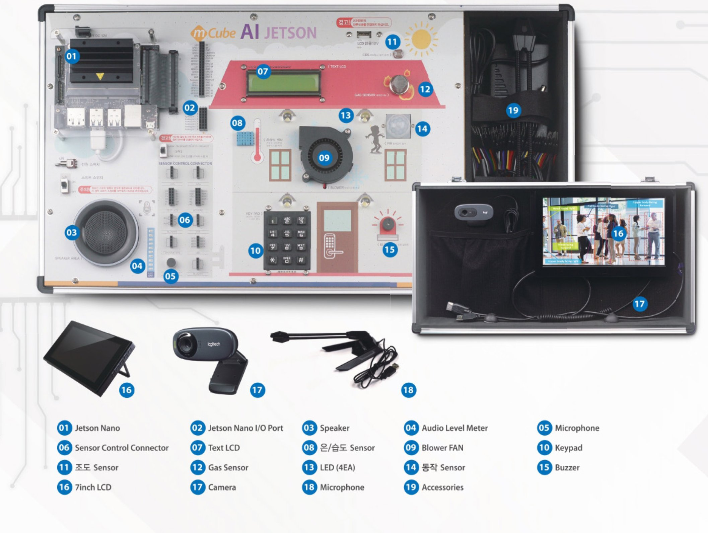
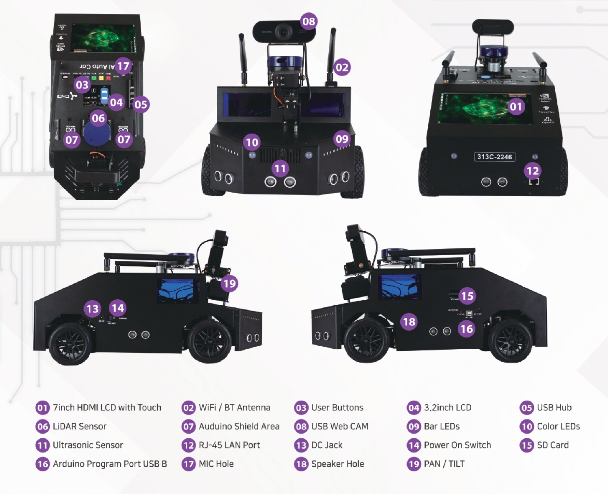
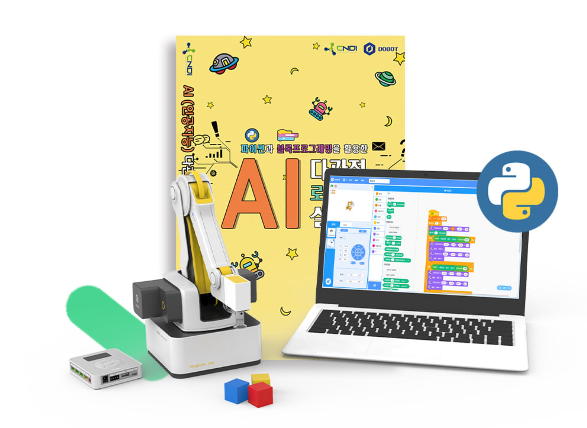
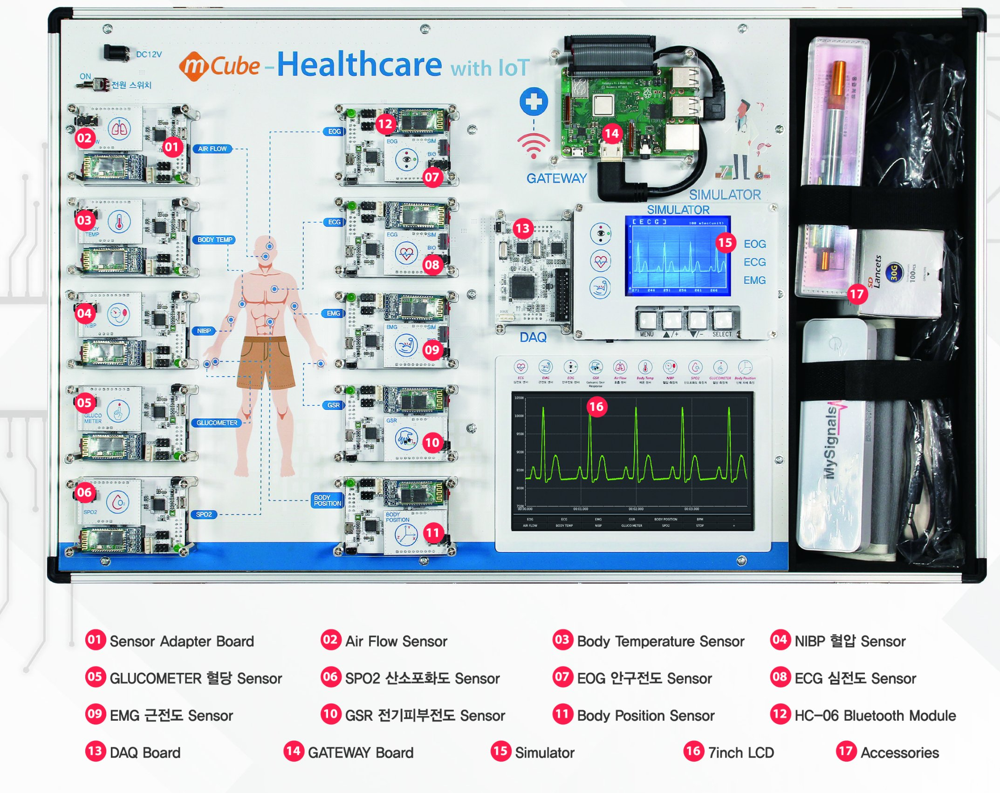
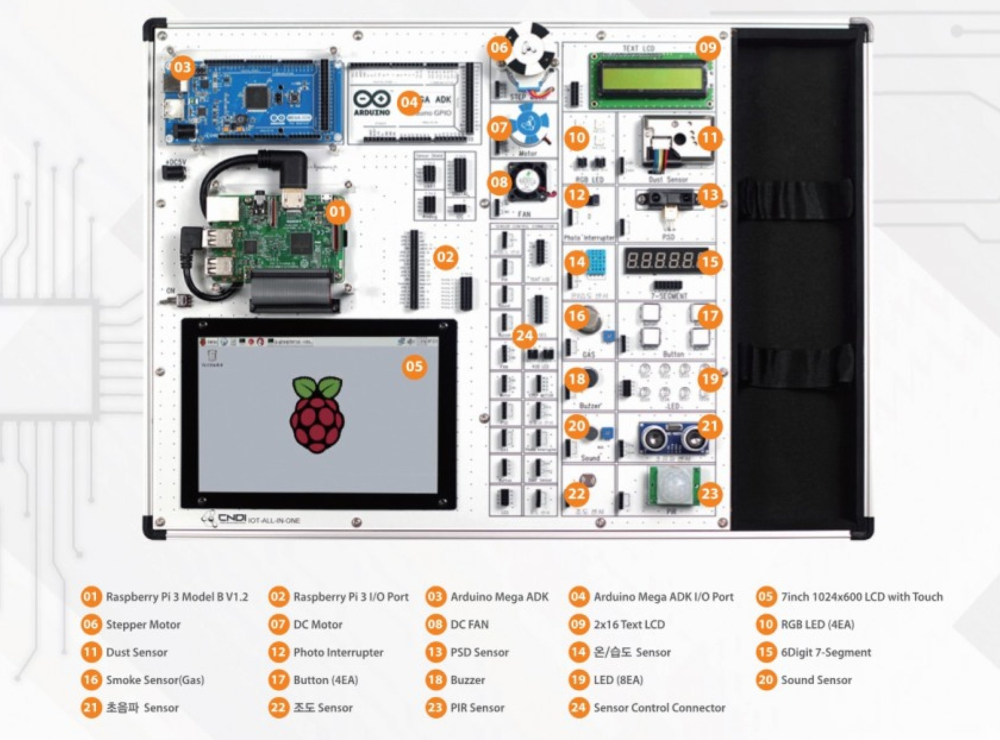
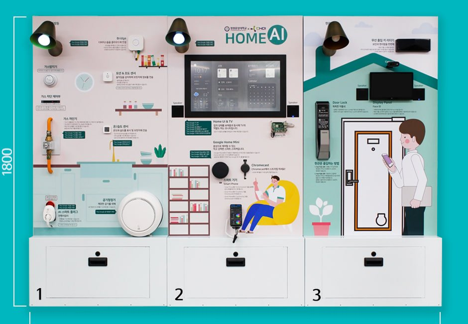

01
개발 + 운영 동시 경험
만드는 일과 현장에서 안정적으로 동작시키는 일을 함께 수행했습니다.
PORTFOLIO · 2026
소프트웨어 교육 장비 개발과 현장 운영을 동시에 수행해 온 약 3년의 R&D 경험을 정리했습니다.
01. ABOUT
개발과 현장 운영을 함께해 온 3년의 R&D 경력입니다. 소프트웨어 개발부터 네트워크 세팅, 현장 설치, 장애 대응, 사용자 교육, 매뉴얼 작성, IT 자산 관리까지 폭넓게 수행했습니다.
01
만드는 일과 현장에서 안정적으로 동작시키는 일을 함께 수행했습니다.
02
장애 발생 조건과 조치 과정을 기록하고, 체크리스트로 정리해 팀과 공유합니다.
03
비전공자에게 기술적 내용을 쉽게 전달한 강의 경험이 있습니다.
04
다양한 환경에서 발생하는 문제를 직접 해결한 경험이 있습니다.
02. RESPONSIBILITIES
소프트웨어 개발 · 현장 운영/IT 지원 · 사용자 교육 · 사내 IT 자산 관리. 각 영역에서 직접 수행한 주요 업무입니다.
DEV
OPS
EDU
IT
03. PRODUCTS
Raspberry Pi, NVIDIA Jetson Nano, Arduino, Dobot 기반의 교육 장비를 R&D 단계부터 현장 운영까지 일관되게 담당했습니다.

01
AI 음성/영상인식 실습 장비

02
자율주행 자동차 실습 장비

03
로봇 자동화 실습 장비

04
헬스케어 IoT 실습

05
IoT 통합 실습 장비

06
스마트홈 실습 장비
04. WEB
자사 홈페이지를 직접 제작 · 운영했습니다. 네이버 배너 광고 랜딩 채널로 운영했으며, 영업 문의 유입 경로로 활용되었습니다.
FEATURED · 영업 문의 유입
제작 · 운영
Django 백엔드 + DB 연동 게시판으로 제품 콘텐츠 관리, 영업 문의 폼 + 네이버 광고 랜딩 채널로 운영했습니다.
FEATURED · 영업 문의 유입
제작 · 운영
Django 백엔드 + DB 연동 게시판으로 제품 콘텐츠 관리, 영업 문의 폼 + 네이버 광고 랜딩 채널로 운영했습니다.
05. TECH STACK
실무에서 사용해 온 기술 스택입니다. 언어 · 운영체제 · 플랫폼/하드웨어 · 웹의 4개 카테고리로 정리했습니다.
01 · LANGUAGES
02 · OS / PLATFORMS
03 · HARDWARE
04 · WEB
06. IT OPERATIONS
시스템 운영 업무도 직접 수행했습니다. 학교 현장의 네트워크 환경 차이로 발생한 문제부터 자산 · 라이센스 관리까지 6개 영역으로 정리했습니다.
학교별 네트워크 환경 차이로 발생한 연결 문제 및 외부 API 호출 오류를 현장에서 직접 해결.
Linux 환경에서 시작 프로그램 등록, 네트워크 설정 고정 등을 위한 스크립트 작성.
현장 방문이 어려운 경우 원격 접속을 통한 셋팅 수정 및 문제 확인.
문제 발생 조건과 조치 과정을 기록하고 체크리스트 · 대응 가이드로 정리해 팀 내 공유.
사내 노트북, NAS 등 HW 장비와 Adobe 등 소프트웨어 라이센스 현황 관리.
교수 · 학생 등 비전공자 사용자의 문의에 대응하고 매뉴얼 제작.